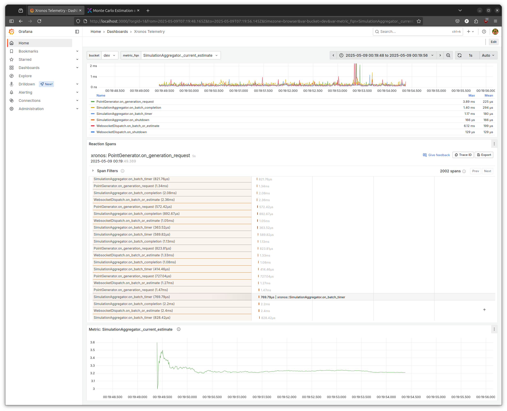

Dashboard
The runtime behavior of xronos programs can be observed using the Xronos Dashboard. The dashboard consists of a user interface based on Grafana and a time series database that stores telemetry data such as traces of reaction executions and values recorded using metrics.
System Requirements
A running Docker daemon. The Xronos Dashboard has been tested with Docker Engine version 27.2.1.
Installation
Create a new virtual environment or activate the same environment in which you
installed the xronos package. Install the dashboard using the following
command:
$ pip install xronos[dashboard]
Usage
Use the following command to start the dashboard:
$ xronos-dashboard start
✔ dashboard available at http://localhost:3000
Open http://localhost:3000 in your browser. This will
open the Grafana-based dashboard. On first usage, you need to log in using the
username admin and password xronos.

After logging in, the trace view opens. Initially, it will be empty.
To show trace data in the dashboard, we need to run a xronos application that
has telemetry enabled. Telemetry can be enabled on any application by calling
enable_telemetry() on the environment. Note that this
has to happen before calling execute execute().
Modify the Hello World example like shown below.
env = xronos.Environment()
env.create_reactor("hello", Hello)
env.enable_telemetry()
env.execute()
Then execute the program.
$ python hello.py
The single reaction execution should register as a data point in the dashboard.

The trace view is most useful for analyzing the execution of more complex
applications. For instance, below you can see the trace view for the
YOLO example, when run with the --telemetry argument.

Visualizing Metrics
We can also use the dashboard to visualize data values recorded for metrics. When you run an application that uses Metrics while the dashboard is running and telemetry is enabled, this will also store any values recorded by the application in the database. For instance, you can run the Monte Carlo example, which already includes a few metrics. The example estimates the value of pi and includes metrics for the current estimate, the estimation error, and the number of processed points.
When running a simulation with telemetry set to enabled in the web interface, the traces of executed reactions should be shown in the default dashboard.

The default dashboard is pre-filled at the bottom with a basic time series view
of your program’s metrics, if your program reports any. In the image above, the
currently-selected metric is SimulationAggregator._current_estimate.
However, it is also possible to customize the dashboard and write queries that might be better suited to your application. Click the “Edit” button in the top-right corner of the Grafana UI to customize the dashboard.
You can then add visualizations to select any time series of interest from your application.
We use InfluxDB for storing the collected data. InfluxDB supports two query languages: InfluxQL and Flux. We recommend InfluxQL as it is similar to other database query languages and is forward-compatible to upcoming versions of InfluxDB, but you may also select the Flux data source if you prefer.
Choose the InfluxDB InfluxQL data source to use the graphical InfluxQL editor.
Select “metrics” in the FROM clause to visualize metrics.
Delete the default GROUP BY clause. If you would like to visualize multiple
metrics, you might want to group them by the xronos.fqn tag.
Finally, select the xronos.value field which holds the value of any recorded metric.
You should now see a line plot like the one below.
Adjust the time window to your liking to zoom in on the data. Note that you may click and hold to select a time range that interests you.
You may use the WHERE clause to apply a filter. For instance, in the image below only the current estimate of pi is visualized.
If you wish to see it in real time, you should set a refresh interval.
Save your changes to ensure that they persist, even when stopping the dashboard.
Upgrading Dashboard Versions
Updating the xronos-dashboard CLI tool will also update the versions of the
Docker images that it depends on. Any time you update the underlying Docker
images, you should keep the following in mind:
By default, the state of your Grafana instance is preserved in a Docker volume, and upgrading the image does not cause that volume to be replaced. This ensures that data that you may need is preserved by default. However, it also means that some updates to the default dashboard released by Xronos will not propagate to your instance automatically unless you delete the existing Docker volume.
When there is an update, your browser may cache the site content, which can create an inconsistency between the code running in your browser and the code running in the Docker image. As a result, you may need to clear the site data associated with
localhost. In Firefox, you can do this by going to “Settings > Privacy and Security > Cookies and Site Data > Manage Data.”
Closing the Dashboard
When you are done, you may stop the dashboard.
$ xronos-dashboard stop
✔ stopped
In case you want to delete all state, including all collected telemetry data and custom queries, you can use the following command.
$ xronos-dashboard delete
✔ stopped